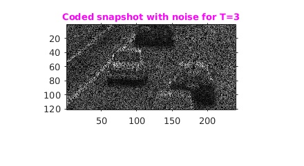
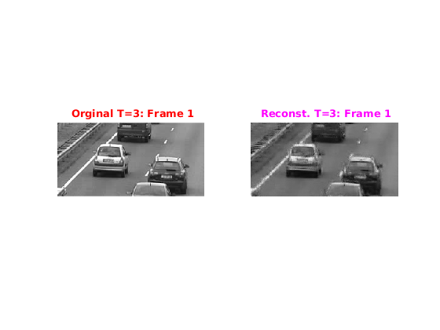
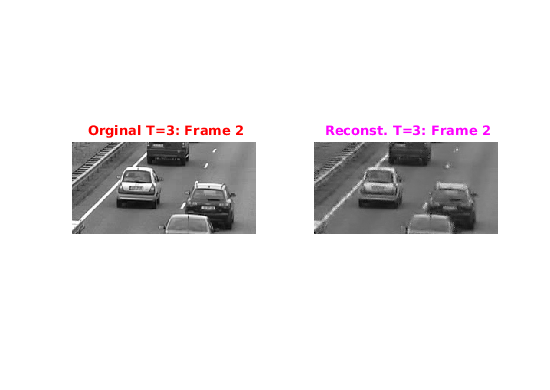

Compressive Video Acquisition using coded snapshoyt
Contents
Assignment1-5
Rollno: 163059009, 16305R011
% adding path for MMREAD %addpath('../MMread');
Init
file='../input/cars.avi';
video=mmread(file,1:10,[],false,true);
H=120;W=240;
1. Part(a) Fetch T=3 frames
T=3; %no.of frames
frame=fetchFrames(video,T,H,W) ;
2. Creating Random Code Matrix
C=generateCodeMtx(H,W,T);
2.1 Creating Coded Snapshot
noiseStd=2.0; E=generateCodedSnapshot(frame,C,noiseStd);
2.2 Showing the "Coded snapshot"
figure('name','Coded snapshot with noise'); imshow(E/max(E(:))); title('\fontsize{10}{\color{magenta}Coded snapshot with noise for T=3}'); axis tight,axis on;
3. Part(c)
4. Part(d & e): Reconstruction
tic patchSize=8;ompEpsilon=6; [outputImg]=reconstruct(E,T,C,patchSize,ompEpsilon); toc
r=1 r=2 r=3 r=4 r=5 r=6 r=7 r=8 r=9 r=10 r=11 r=12 r=13 r=14 r=15 r=16 r=17 r=18 r=19 r=20 r=21 r=22 r=23 r=24 r=25 r=26 r=27 r=28 r=29 r=30 r=31 r=32 r=33 r=34 r=35 r=36 r=37 r=38 r=39 r=40 r=41 r=42 r=43 r=44 r=45 r=46 r=47 r=48 r=49 r=50 r=51 r=52 r=53 r=54 r=55 r=56 r=57 r=58 r=59 r=60 r=61 r=62 r=63 r=64 r=65 r=66 r=67 r=68 r=69 r=70 r=71 r=72 r=73 r=74 r=75 r=76 r=77 r=78 r=79 r=80 r=81 r=82 r=83 r=84 r=85 r=86 r=87 r=88 r=89 r=90 r=91 r=92 r=93 r=94 r=95 r=96 r=97 r=98 r=99 r=100 r=101 r=102 r=103 r=104 r=105 r=106 r=107 r=108 r=109 r=110 r=111 r=112 r=113 Elapsed time is 276.892409 seconds.
4.1 Showing o/p
for i=1:T figure('name','Result T=3'); % Original subplot(1,2,1); imshow(frame(:,:,i),[]); label= sprintf('\\fontsize{10}{\\color{red} Orginal T=3: Frame %d}',i); title(label); % Reconstruction subplot(1,2,2); imshow(outputImg(:,:,i),[]); label= sprintf('\\fontsize{10}{\\color{magenta} Reconst. T=3: Frame %d}',i); title(label); end 